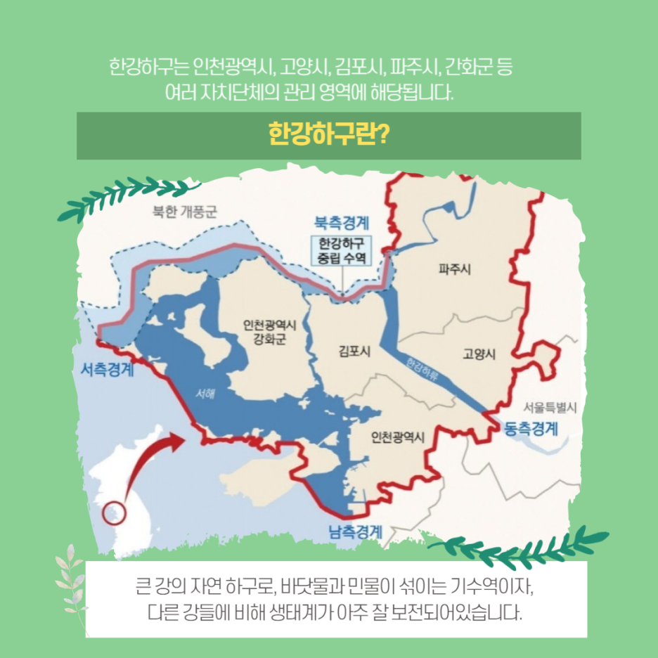

활동내역
| 번호 | 제목 | 링크 |
|---|---|---|
| 1 | 2024년 한강하구 생태환경 물길투어 | 바로가기 |
| 2 | [2024 한강하구 서포터즈 2기] 한강하구 일대의 갯벌 | 바로가기 |
| 3 | [2024 한강하구 서포터즈 2기] 한강하구 일대의 습지: 생태계와 보전의 중요성 | 바로가기 |
| 4 | [2024 한강하구 서포터즈 2기] 한강하구 일대의 전망대 | 바로가기 |
| 5 | [2024 한강하구 서포터즈 2기] 한강하구 일대의 해양생물 | 바로가기 |
| 6 | [2024 한강하구 서포터즈 2기] 한강하구의 삶 영상 후기 | 바로가기 |
| 7 | [2024 한강하구 서포터즈 2기] 한강하구 생태환경 미세플라스틱 문제 | 바로가기 |
| 8 | [2024 한강하구 서포터즈 2기] 숨겨진 보물, 한강하구의 변천사 | 바로가기 |
| 9 | [2024 한강하구 서포터즈 2기] 한강하구 시민 대상으로 알릴 수 있는 이벤트, 행사 아이디어 | 바로가기 |
관련 정보 (iframe)
